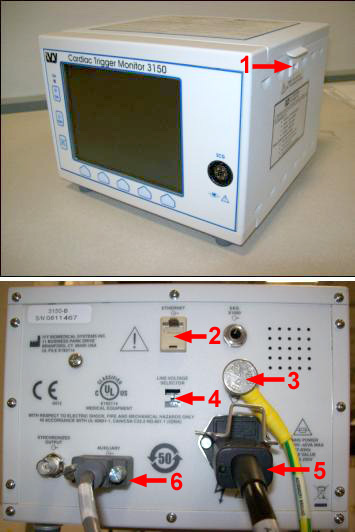
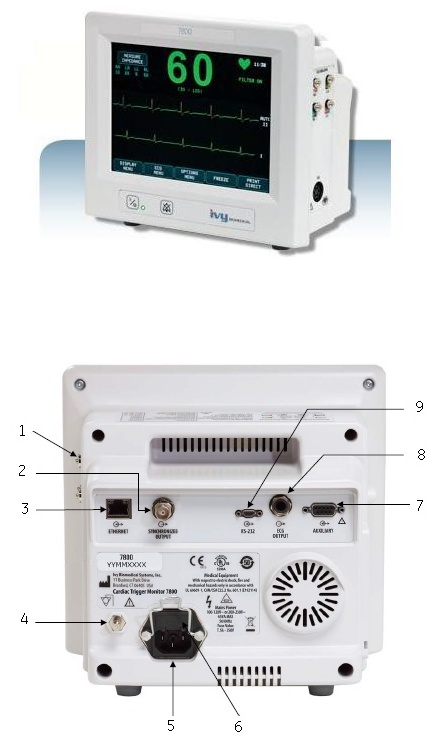

Operating Documentation
Direction 5193574-800, Rev# 22
LightSpeed 7.X Service Methods
Module Version 2.0, Version Date 7/24/13
Operating Documentation |
| Required Persons | Preliminary Reqs | Procedure | Finalization |
|---|---|---|---|
| 1 |
This procedure applies to CT and PET/CT systems with the Integrated Peripheral Controller (IPC) board or the Gantry Options Board (GOB). The IVY 3150-B is a replacement for the IVY 3150-A.
Contents of the Cardiac Monitor collector are shown in Table 1.
Table 1: Collector 5133408
| Item | P/N | Qty | Description |
|---|---|---|---|
| 1 | 5112819 | 1 | 3150 IVY ECG MONITOR |
| 2 | 5112819-2 | 1 | 3 LEAD, LOW-NOISE, PATIENT CABLE, 3m LONG |
| 3 | 5112819-3 | 1 | ECG, LOW-NOISE, LEAD WIRES, 24in LONG, SET OF 3 |
| 4 | 5112819-4 | 1 | ECG, ROLLING MONITOR STAND |
| 5 | 5112819-5 | 1 | ECG, RADIOTRANSLUCENT ELECTRODES, 20 PACKS OF 3 |
| 6 | 2373436-4 | 1 | LAN CABLE, CARDIAC INTERFACE PANEL TO CONSOLE, 26350mm LONG |
| 7 | 2373436-5 | 1 | LAN CABLE, CARDIAC INTERFACE PANEL TO ECG MONITOR, 1000mm LONG |
| 8 | 5122589 | 1 | Adapter, Bulkhead RJ45 CAT5e Shielded, L-com #TDG1026KS-C5E |
Setup/assemble the Cardiac Monitor cart. (Refer to assembly manual.)
Attach the Cardiac Monitor to the cart.
Refer to Illustration 1 for the remaining steps in this section.
Illustration 1: IVY 3150-B Cardiac Monitor

| Number | Description |
| 1 | Output USB Port |
| 2 | Ethernet |
| 3 | Ground Lug |
| 4 | Voltage Line Select |
| 5 | IEC Power Connector |
| 6 | Auxiliary Signal Output |
Verify Voltage Line Select switch is set to 115V.
(For systems with IPC only) Attach Ground cable to Ground Lug at rear of Cardiac Monitor.
Connect AC (IEC) power cable to the back of the Cardiac Monitor.
To proceed:
(For replacing an IVY 3150-B on systems with an IPC) Connect the AC (IEC) power cable to the Power connector (IEC) at the Gantry Options Panel (IPC).
(For replacing an IVY 3150-A with an IVY 3150-B on systems with a GOB Board) The IEC power cable provided will not be used in all cases. If necessary, reuse the existing power cable and power connection used prior to this replacement. Place unused cables in Service Cabinet for possible use upon any future system upgrade.
Connect signal cable 237346-4 and 237436-5 according to Table 2.
Table 2: Cardiac Signal Cable Interconnect
| PN | Description | From | To |
|---|---|---|---|
| 2373436-4 | LAN CABLE, CARDIAC INTERFACE PANEL TO CONSOLE, 26350mm LONG | System Console:
| Gantry Ethernet Switch (any open Connection) |
| 2373436-5 | LAN CABLE, CARDIAC INTERFACE PANEL TO ECG MONITOR, 1000mm LON | Cardiac Monitor Auxiliary connector | Gantry Cardiac Port |
At the console select:
Common Service Desktop.
Configuration tab.
[Install Gating Monitor].
From the menu select:
[IVY3150].
[Accept].
| NOTE: | This automatically sets up the monitor at IP address 10.44.22.21. |
Setup/assemble the Cardiac Monitor cart. (Refer to assembly manual.)
Attach the Cardiac Monitor to the cart.
Refer to Illustration 2.
Illustration 2: IVY 7800 Monitor Front and Rear View

Table 3: Feature Descriptions
| Number | Description |
| 1 | 4- Lead ECG Simulator RA, RL, LL, LA |
| 2 | BNC Connector SYNCHRONIZED OUTPUT |
| 3 | RJ45 Connector ETHERNET |
| 4 | PEQ Ground |
| 5 | Mains Power Input |
| 6 | Fuses (Behind panel) |
| 7 | 9-pin D-subminiture AUXILIARY |
| 8 | 1/4 in. Stereo Jack ECG OUTPUT |
| 9 | 9-pin micro-D RS-232 |
(For systems with IPC only) Attach Ground cable to Ground Lug at rear of Cardiac Monitor and Ground Lug on the IPC Panel.
Connect AC (IEC) power cable to the back of the Cardiac Monitor.
To proceed:
(For replacing an IVY 3150-B or IVY 7800 on systems with an IPC) . Connect the AC (IEC) power cable to the Power connector (IEC) at the Gantry Options Panel (IPC).
(For replacing an IVY 3150-A with an IVY 3150-B or IVY 7800 on systems with a GOB Board) . The IEC power cable provided will not be used in all cases. If necessary, reuse the existing power cable and power connection used prior to this replacement. Place unused cables in Service Cabinet for possible use upon any future system upgrade.
Connect signal cable 237346-4 and 237436-5 according to Table 2.
At the console select:
Common Service Desktop.
Configuration tab.
[Install Gating Monitor].
From the menu select:
[7800].
[Accept].
| NOTE: | This automatically sets up the monitor at IP address 10.44.22.21 |
No finalization steps.